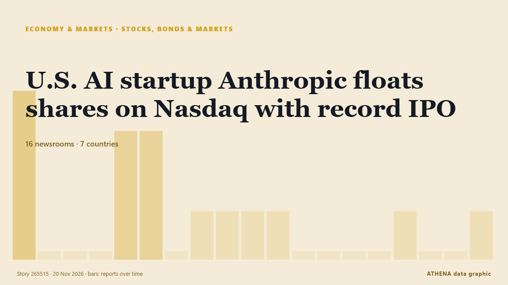

Stocks, bonds & markets
SponsoredPresented by  Cybernetics and Artificial Intelligence Lab Welcome to the Cybernetics and Artificial Intelligence Laboratory, established at the Department of Business Administration of the National and Kapodistrian University of Athens. The lab is headed by Professor Dimitrios Thomakos. The lab aims to do research that can be published in top venues. Our research uses tools and methods of Artificial Intelligence, and lies in the following areas: - Forecasting - Decision making - Cyber security - Finance We are always looking forward to collaborating with exceptional students!
Cybernetics and Artificial Intelligence Lab Welcome to the Cybernetics and Artificial Intelligence Laboratory, established at the Department of Business Administration of the National and Kapodistrian University of Athens. The lab is headed by Professor Dimitrios Thomakos. The lab aims to do research that can be published in top venues. Our research uses tools and methods of Artificial Intelligence, and lies in the following areas: - Forecasting - Decision making - Cyber security - Finance We are always looking forward to collaborating with exceptional students!
| 7 Nov | 0 |
|---|---|
| 8 Nov | 0 |
| 9 Nov | 0 |
| 10 Nov | 0 |
| 11 Nov | 0 |
| 12 Nov | 0 |
| 13 Nov | 0 |
| 14 Nov | 0 |
| 15 Nov | 2 |
| 16 Nov | 7 |
| 17 Nov | 3 |
| 18 Nov | 3 |
| 19 Nov | 8 |
| 20 Nov | 0 |

U.S. AI startup Anthropic floats shares on Nasdaq with record IPO
Luxury home sellers are offering multimillion-dollar mansions in exchange for Anthropic stock as the AI giant's IPO approaches. from Business Insider
Anthropic IPO will create thousands of multimillionaire employees
The average Anthropic employee could be worth over $40 million after the company's IPO today, according to SEC filings and investors. from CNBC World
ASX slumps, Wall Street dives despite strong debut for Anthropic
The Australian sharemarket has declined at the open after Anthropic’s strong debut on Wall Street was not enough to stop the bleeding on Wall Street. from The Age
Newcomer wins top stock market journalism award
Fiji Television journalist Eparama Warua, who “did not even take up anything in business in high school and on to tertiary”, won the Stock Market Journalist of the Year award, a new category, at the… from Post-Courier (PNG)
Boom or Bubble? Understanding AI and the U.S. Economy
Investments in artificial intelligence (AI) have powered much of the U.S. stock market’s gains in recent years. from Council on Foreign Relations
Pierce Brosnan sends message to new James Bond Robert Pattinson
Former James Bond star Pierce Brosnan has given Robert Pattinson his seal of approval, recalling their time working together more than 15 years ago. from Stuff
Anthropic to smash IPO records with £1.13trn valuation
The maker of the Claude artificial intelligence tool has priced its shares at 83 dollars each. from The Irish News (Belfast)
Robert Pattinson’s James Bond Casting Causes Some 007 Fan Backlash
A look at reactions to previous James Bond casting announcements, similarities to Batman casting backlash, and what it means for Robert Pattinson as the new 007. from Forbes Business
Gamers in Asia stoked to play 'GTA VI', many on grey market
It’s censored in Japan, not officially sold in China, and has floundered in Asian markets where mobile games are king, but “Grand Theft Auto” fever is sweeping the continent regardless. from Dawn
Saudi Arabia’s PIF Remains World’s Most Valuable Sovereign Fund Brand for Third Consecutive Year
RIYADH: Saudi Arabia’s Public Investment Fund has concentrated roughly 80 percent of its reportable US equity holdings in SpaceX as of the end of the third quarter, according to its latest filing… from Arab News
FM Nirmala Sitharaman holds pre-Budget consultations with manufacturing, MSME sectors
FM holds pre-Budget consultations with manufacturing, MSME sectors. from Deccan Herald
A new James Bond has always been a chance to reinvent the series
The announcement of a new actor to play James Bond gives the franchise an opportunity to reinvent itself for a new audience. from ABC News Australia
Kalshi Readies Stock Trading Launch After Quietly Buying Broker in July
Prediction markets platform Kalshi bought New York-based broker FB Securities in July and plans to expand into stock trading within the next two months, The Wall Street Journal reported Monday (Nov. from PYMNTS
Stocks close lower ahead of Nvidia results run-up
The FTSE 100 closed down 191.68 points, 1.8%, at 10,689.87. from Evening Standard (London)
Dianne Buswell shares how she spent first day after Strictly in response to tearful exit
Dianne Buswell shared a sad, single response to her and Will Best's Strictly exit after last emotional appearance. from Manchester Evening News
Seoul stocks drop for 4th day amid lingering AI woes
SEOUL, Nov. 17 (Yonhap) -- South Korean stocks sank for the fourth consecutive s... from Yonhap (English)
Alonso, Loeb to make Dakar Rally return for Aston Martin
Fernando Alonso, who drives for the Aston Martin F1 team, previously took part in the Dakar Rally in 2020, when he finished 13th in a Toyota. from Free Malaysia Today
Russell Brand could face prison discipline after wife shares his jail message
Convicted rapist Russell Brand could face disciplinary action at HMP Littlehey if he is found to have broken prison rules, after his wife Laura Gallacher shared a message from him on YouTube. from Manchester Evening News